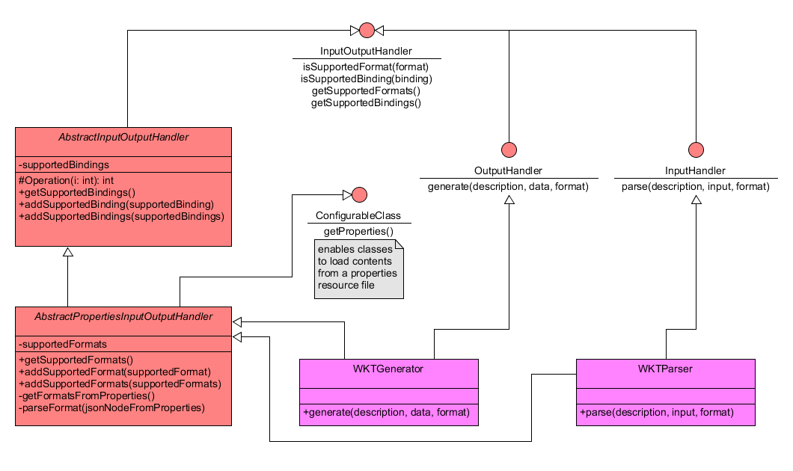

JavaPS Documentation - Adding new Processes/Algorithms
This page aims to guide developers on how to create and add new custom processes to JavaPS. The introduction is split into two main parts. First, the creation of custom algorithms/processes through Java annotations is focused. Second, the guide provides recommendations on how to bundle custom algorithm definitions within a so-called External Processing Repository (EPR). In general, it takes more than writing a single Java class to create a new custom algorithm/process, as a developer also has to include definitions of appropriate bindings or data handling components assisting in de-/encoding and processing in- and output data. Here, an EPR may collect all relevant Java components within a stand-alone Maven project, which is separated from JavaPS. Registration of its components is accomplished via Maven and Spring configuration, as explained in section Registration of an EPR within JavaPS via Maven and Spring configuration.
How to add custom Processes/Algorithms to JavaPS
Custom Algorithm Definitions through Java Annotations
As described in the Architectural Details Page, processes are implementations of the interface IAlgorithm, which prescribes an execute() method and a TypedProcessDescription, the Java representation of a process description. The abstract component AbstractAlgorithm implements the interface and thus provides the rudimentary skeleton for any Algorithm implementation. However, algorithm developers do not have to extend AbstractAlgorithm themselves. Instead, JavaPS offers a more elegant and simple way of implementing custom Algorithms. Through suitable Java annotations, any Java class may become an Algorithm that is found at application start-up by JavaPS. This functionality is provided by component AnnotatedAlgorithm, which extends AbstractAlgorithm and thus provides a full implementation of the requirements (process description and execute() method). The necessary information is automatically parsed and derived from the annotations.
The following example demonstrates the definition of an annotated algorithm. The exemplar "TestAlgorithm" is marked as an implementation of IAlgorithm by annotating certain methods with key annotation, such as @Algorithm, @LiteralInput, @LiteralOutput and @Execute.
package org.n52.javaps.service;
//import statements omitted
@Algorithm(version = "1.0.0")
public class TestAlgorithm {
private String input1;
private String input2;
private String output1;
private String output2;
@LiteralInput(identifier = "input1")
public void setInput1(String value) {
this.input1 = value;
}
@LiteralInput(identifier = "input2")
public void setInput2(String value) {
this.input2 = value;
}
@Execute
public void execute() {
this.output1 = input1;
this.output2 = input2;
}
@LiteralOutput(identifier = "output1")
public String getOutput1() {
return this.output1;
}
@LiteralOutput(identifier = "output2")
public String getOutput2() {
return this.output2;
}
}
Basically, the Java class is annotated with @Algorithm to tell JavaPS, that this class is an Algorithm. During initialization, JavaPS scans through available resources to find all classes marked with @Algorithm and uses the remaining annotated elements to automatically derive the associated ProcessDescription. In consequence, certain annotations are expected and investigated in order to create the components of the ProcessDescription, such as a single mandatory @Excecute annotation to declare the functional behaviour of the Algorithm or an arbitrary number of process input and output definitions. Each of the relevant annotations is described in detail below.
Class Annotation @Algorithm
The annotation @Algorithm marks a Java class comprises the following additional properties:
- String identifier: specifies the unique job identifier of the process; if not set, the fully qualified class name (Java package and class name) is used
- String title: the title of the process; can be chosen arbitrarily; if not set, the fully qualified class name (Java package and class name) is used
- String abstrakt: a description of the process to let others know what it can do and how to serve it
- String version: the version of the process
- Boolean storeSupported: true, if the process allows persistence of the results; true per default
- Boolean statusSupported: true, if the process supports status; true per default
Annotations for the Definition of Process Inputs
Typically, a process has one or more inputs and produces one or more outputs. Consequently, the in- and outputs can be defined via appropriate annotations as well. E.g., the annotation @LiteralInput(identifier = "X") marks a Java setter-method that sets the literal input with identifier "X". The input itself is stored as a Java class property, which is set by the annotated method when parsing the request and instantiating the Algorithm. However, as of January 2017, only literal and complex inputs can be defined within annotated algorithms. Support for bounding box inputs is not yet implemented. To define a complex input, an input setter-method may be annotated with @ComplexInput. In the same way, any output may be specified by annotating a suitable getter-method with @LiteralOutput or @ComplexOutput. Similar to @Algorithm the in- and output definitions provide additional properties to specify details. Subsequently, these properties are explained:
Setter Annotation @LiteralInput
Annotation @LiteralInput Properties
- String identifier: specifies the unique input identifier of the input
- String title: the title of the input; can be chosen arbitrarily
- String abstrakt: a description of the input
- long minOccurs: the minimum number of occurrences within an Execute request; default value is "1"
- long maxOccurs: the maximum number of occurrences within an Execute request; default value is "1"
- String defaultValue: a default value that is used when the input is not specified within an Execute request
- String[] allowedValues: an array of concrete allowed values for the input;
- String uom: specification of the unit of measure
- Class binding: reference to a binding class that implements/extends LiteralType.class and thus is able to parse the input from an Execute request correctly; basically this binding component acts as a wrapper for the input; more information about binding is provided in section The Role of the Binding Implementations
Setter Annotation @ComplexInput
Annotation @ComplexInput Properties
- String identifier: specifies the unique input identifier of the input
- String title: the title of the input; can be chosen arbitrarily
- String abstrakt: a description of the input
- long minOccurs: the minimum number of occurrences within an Execute request; default value is "1"
- long maxOccurs: the maximum number of occurrences within an Execute request; default value is "1"
- long maximumMegaBytes: a limitation of the maximum size of the complex input's payload
- Class binding: reference to a binding class that implements/extends ComplexData.class and thus is able to parse the complex input from an Execute request correctly; basically this binding component acts as a wrapper for the input; more information about binding is provided in section The Role of the Binding Implementations
Annotations for the Definition of Process Outputs
Setter Annotation @LiteralOutput
Annotation @LiteralOutput Properties
- String identifier: specifies the unique output identifier of the output
- String title: the title of the output; can be chosen arbitrarily
- String abstrakt: a description of the output
- String uom: specification of the unit of measure
- Class binding: reference to a binding class that implements/extends LiteralType.class and thus is able to encode the output correctly; basically this binding component acts as a wrapper for the output; more information about binding is provided in section The Role of the Binding Implementations
Setter Annotation @ComplexOutput
Annotation @ComplexOutput Properties
- String identifier: specifies the unique output identifier of the output
- String title: the title of the output; can be chosen arbitrarily
- String abstrakt: a description of the output
- Class binding: reference to a binding class that implements/extends ComplexData.class and thus is able to encode the output correctly; basically this binding component acts as a wrapper for the output; more information about binding is provided in section The Role of the Binding Implementations
The Role of the Binding Implementations
During the previous explanation of the annotations for in- and outputs, a specific annotation called binding was introduced. Its purpose and relevance will be described in this section. In general, a WPS process defines several process in- and outputs. When a client constructs and sends an Execute request, the inputs are specified using a certain format/encoding. Also the client may request the process output(s) to be encoded in a certain format. While the available formats are predefined by the JavaPS implementation of that process, the Algorithm implementation uses a single internal representation of the in- and outputs. Hence, transformation between the different data representations is necessary.
In essence, a JavaPS Algorithm may internally rely on format Internal_A to interpret data and perform computations. A client however may send an Execute request, where the input is specified using different format External_B and the output should be encoded in another format External_C. During process management and execution, the external input representation (External_B) first has to be transformed/decoded into the internal representation (Internal_A) so the process may use it to compute the result (which again uses the internal data representation of the Algorithm implementation). When creating the Execute response object, the internal representation of the process output/result then has to be encoded according to the external format (External_C) as requested by the client.
Whenever differences within the data representations of process in- and outputs between internal Algorithm implementation and external request/response objects occur, a binding implementation can be used. It acts as a wrapping component for the internal data representation and provides means to access and manage its data. In collaboration with appropriate data handling components, binding implementations control the correct transformations between the different internal and external data representations.
As process in- and outputs may have different types (e.g. literal or complex), a binding component must implement the relevant interface. While binding classes for literal in-/outputs implement the interface LiteralData, the interface ComplexData has to be implemented by those bindings that wrap a complex in-/output. A detailed example is provided in the context of an External Processing Repository (EPR) in sub-section Binding and Data Handlers for Data Representation/Transformation of Process In- and Outputs.
Annotation @Execute
After specifying the in- and outputs of the process, only one mandatory annotation/specification is required. Per Algorithm one method has to exist that is annotated by @Execute. This method is called when the process is executed and hence its method body has to compute its result(s)/output(s).
Conclusion and Recommendation for an External Processing Repository
Concluding, the whole definition of an Algorithm can be specified through the appropriate Java annotations. On start-up, the application automatically scans Java resources defined as Spring beans for classes annotated with @Algorithm and thus makes them operatable. If necessary, new implementations of LiteralType or ComplexData (so-called bindings) may be provided alongside to correctly parse and encode the in- and outputs of the process.
In theory, new implementations may be added within the packages of JavaPS directly. However, it is recommended to outsource the Algorithm implementations into a so-called External Processing/Algorithm Repository, e.g. as stand-alone Maven project that encapsulates the definitions of all algorithms and necessary binding implementations of LiteralType and ComplexData and accompanying data handlers for proper de- and encoding of process in- and outputs. Hints and useful information for creating such an external repository are presented below.
Creating an External Processing Repository (EPR)
Introduction - What is an EPR?
An External Processing Repository (EPR) bundles algorithm/process definitions for JavaPS in a separate Maven project including necessary binding implementations. Within this section, the benefits and hints for the creation and contents of such an EPR are presented.
Benefits of using an EPR
Possible benefits are the clear separation of concerns, as the WPS process implementations are detached from the actual WPS infrastructure implementation. Hence, both components can be maintained and developed independent from each other. In addition, by organizing process implementations in external repositories, each repository may include only Algorithms within a certain application context (e.g. one repository for geographic/geometric analysis, another for data/format conversions). By docking one or more such thematically specialized repositories on to JavaPS (through suitable Maven and Spring configuration), subject-oriented WPS instances can be set-up.
Contents of an EPR - How to write/create an EPR for JavaPS
The following sub-sections concentrate on the required contents of an EPR and provide developers with a guide on how to create their own processing repository.
An exemplar EPR for JavaPS is the 52°North GitHub-project javaps-jts-backend. It comprises a single additional algorithm/process definition and required other Java components as well as configuration files. JTS stands for Java Topology Suite, an open source Java library providing spatial processing and analysis functionalities for 2D linear geometries. This project is used as an example to highlight the assets of an EPR subsequently.
In general, an EPR adds the following components to the basic JavaPS WPS infrastructure:
- Algorithm definitions through annotated Java classes as described above.
- Binding implementations for de- and encoding of process in- and outputs, as described in section The Role of the Binding Implementations.
- In- and Output Handlers: Together with an associated Binding these handlers provide serviceable data required by the associated algorithm/process. This is relevant in the context of data representation and its de- and encoding, as indicated in the description of handling an Execute request. E.g., while in a WPS Execute request, input geometries might be encoded using Well-Known-Text(WKT) format, an internal algorithm/process within javaps-jts-backend may require them as proper JTS Java objects. Furthermore, while the process may use these JTS inputs to compute certain JTS output objects, the Execute response object that is returned to the client could display them as WKT again (to be precise, the user submits the desired in- and output format within request parameters). In conclusion, In- and Output Handlers combined with suitable Binding implementations take care of proper format transformations between different internal and external representations of process in- and outputs. Section Java resources - Exemplar Algorithm/Process Definition of "JTSConvexHullAlgorithm" explains their coexistence in more detail.
The presentation of the exemplar javaps-jts-backend is divided into three parts. First, its project structure is shown followed by an explanation of the required Java resources and finally ends with the necessary Maven and Spring configuration.
Project Structure of exemplar "javaps-jts-backend" Algorithm Repository
The Maven project javaps-jts-backend is organized as follows. Note that the subsequent project outline only comprises the folders and files related to Maven and the algorithm implementation. Other files, such as GitHub README or licensing information files are neglected and can be inspected on the repository on GitHub.
javaps-jts-backend
|
| - "pom.xml"
| - src
|
| - main
|
| - config
|
| - ... // additional config file(s), omitted
| - java
|
| - org/n52/geoprocessing/jts
|
| - algorithm
|
| "JTSConvexHullAlgorithm.java"
| - io
|
| - data/binding/complex
|
| "JTSGeometryBinding.java"
| - datahandler
|
| - generator
|
| - "WKTGenerator.java"
| - parser
|
| - "WKTParser.java"
| - resources
|
| - "wkt.properties"
| - components
|
| - "jts-backend.xml"
| - test
|
| - ... // omitted
The general folder structure is predefined by Maven. The project's root tier contains the pom.xml file, which comprises the necessary information regarding dependencies and project building. While Java classes are included in src/main/java relevant resources are located in src/main/resources. src/test/java and src/test/resources complete Mavens project structure and comprise test cases for JUnit tests. In addition to this mandatory structure, the folder src/main/config comprises relevant configuration files, e.g. containing information related to the Maven build process. Within the scope of this documentation, only the required steps to produce a valid processing backend/repository for JavaPS are presented. Thus, the following sections focus only on the necessary Java definitions within src/main/java and resource files within src/main/resources.
While new algorithms/processes and related binding and data handling components are defined through appropriate Java implementaions) under src/main/java, src/main/resources comprises an XML Spring configuration file including bean definitions of the implemented Java classes is required to register those components within JavaPS. Both aspects are described in more detail below.
Java resources - Exemplar Algorithm/Process Definition of "JTSConvexHullAlgorithm"
This section focuses on the presentation of an exemplar Algorithm implementation and related additional Java resources of the javaps-jts-backend. For clarification, the folder structure and important Java files are given below:
javaps-jts-backend
|
| - "pom.xml"
| - src
|
| - main
|
| - java
|
| - org/n52/geoprocessing/jts
|
| - algorithm
|
| "JTSConvexHullAlgorithm.java"
| - io
|
| - data/binding/complex
|
| "JTSGeometryBinding.java"
| - datahandler
|
| - generator
|
| - "WKTGenerator.java"
| - parser
|
| - "WKTParser.java"
The algorithm/process and related binding and data handling components are defined in the sub-packages of src/main/java/. To be precise, an implementation of a convex hull algorithm is provided in org/n52/geoprocessing/jts/algorithm/JTSConvexHullAlgorithm.java. According to the guide on how to add new processes/algorithms to JavaPS, this component is the implementation of an AnnotatedAlgorithm that adds a process to compute the convex hull of an input geometry to JavaPS. However, in most cases a new Algorithm implementation has to be accompanied by additional binding and data handling components. As mentioned in section The Role of the Binding Implementations, those additional components take care of suitable data representation between Execute requests and the internal Algorithm representation including the required transformation (or de- and encoding) steps. Within the scope of the JTSConvexHullAlgorithm, those components are implemented by the binding JTSGeometryBinding and the two data handlers WKTGenerator and WKTParser. Each of these components is introduced in detail subsequently.
Algorithm Definition
Package: src/main/java/org/n52/geoprocessing/jts/algorithm/.
Component: JTSConvexHullAlgorithm.java
Java Code:
package org.n52.geoprocessing.jts.algorithm;
import org.n52.geoprocessing.jts.io.data.binding.complex.JTSGeometryBinding;
import org.n52.javaps.algorithm.annotation.Algorithm;
import org.n52.javaps.algorithm.annotation.ComplexInput;
import org.n52.javaps.algorithm.annotation.ComplexOutput;
import org.n52.javaps.algorithm.annotation.Execute;
import com.vividsolutions.jts.geom.Geometry;
/**
* This algorithm creates a convex hull of a JTS geometry using build the in method.
* @author BenjaminPross
*
*/
@Algorithm(version = "1.1.0")
public class JTSConvexHullAlgorithm{
private Geometry result;
private Geometry data;
@ComplexOutput(identifier = "result", binding = JTSGeometryBinding.class)
public Geometry getResult() {
return result;
}
@ComplexInput(identifier = "data", binding = JTSGeometryBinding.class)
public void setData(Geometry data) {
this.data = data;
}
@Execute
public void runAlgorithm() {
result = data.convexHull();
}
}
The AnnotatedAlgorithm JTSConvexHullAlgorithm is a process implementation for JavaPS that makes use of the Java Topology Suite to compute the convex hull of an input geometry. It comprises two properties, data for the input geometry and result for the output convex hull geometry. Both are of type JTS Geometry. The setData(Geometry data) and getResult() methods are annotated by @ComplexInput and @ComplexOutput respectively to indicate that both deal with complex data with regard to the WPS specification. Both annotations include the definitions of the in- and output identifier as well as the associated binding implementation by component JTSGeometryBinding.class. The latter is explained in the following section. Finally, the annotation @Execute marks the method runAlgorithm(), which will be run on process execution. It computes the convex hull of data and stores it in the result property.
Binding and Data Handlers for Data Representation/Transformation of Process In- and Outputs
To integrate the JTSConvexHullAlgorithm into JavaPS, additional binding and data handler components are required to handle data conversion from external request inputs → internal algorithm data and vice versa from internal algorithm data → external response outputs. In particular, the JTSConvexHullAlgorithm expects input data as JTS Geometry and it computes its convex hull also as JTS Geometry. The javaps-jts-backend however provides a new binding and data handlers that allow clients to deliver the input data and receive output results using the WKT (Well Known Text) format. The binding wraps the internal JTS Geometry and the data handlers integrate into the infrastructure of JavaPS and take care of converting between WKT ↔ JTS Geometry by relying on the binding. In the following, both aspects are intensified.
Binding
Package: src/main/java/org/n52/geoprocessing/jts/io/data/binding/complex
Component: JTSGeometryBinding.java
Java Code:
package org.n52.geoprocessing.jts.io.data.binding.complex;
import org.n52.javaps.io.complex.ComplexData;
import com.vividsolutions.jts.geom.Geometry;
/**
* This class wraps a JTS Geometry.
* @author Benjamin Pross
*
*/
public class JTSGeometryBinding implements ComplexData<Geometry> {
/**
*
*/
private static final long serialVersionUID = 3415522592135759594L;
private Geometry geom;
public JTSGeometryBinding(Geometry geom){
this.geom = geom;
}
public Geometry getPayload() {
return this.geom;
}
public Class<?> getSupportedClass() {
return Geometry.class;
}
public void dispose() {
}
}
The JTSGeometryBinding implements the interface ComplexData and acts as a Wrapper for a JTS Geometry. Its constructor takes one parameter of type JTS Geometry that is stored as class property geom. The methods getPayload() and getSupportedClass() are inherited from ComplexData and contain important information required by the infrastructure of JavaPS. While getSupportedClass() points to the Java type that is supported by this binding (here Geometry.class), getPayload() retrieves the bindings actual value (here the wrapped JTS Geometry instance). From the perspective of JavaPS the supportedClass is required to determine, which bindings are available for which type of data.
Data Handlers - Implementations of Interface "InputOutputHandler"
While bindings wrap a certain type of data, they do not convert between different data representations themselves. Instead, this action is performed by data handlers. E.g., the javaps-jts-backend provides such handlers to manage data transformations of geometric data between WKT (Well Known Text) ↔ JTS Geometry (via JTSGeometryBinding). Consequently, there is a component WKTGenerator handling the conversion from JTS Geometry (via JTSGeometryBinding) → WKT and another component WKTParser that performs the conversion from WKT → JTS Geometry (via JTSGeometryBinding). To integrate into the infrastructure of JavaPS, these data handlers have to implement certain interfaces and extend certain abstract classes. The following UML class diagram highlights these hierarchy aspects of both components:
Data Handlers Type Hierarchy
The red coloured abstract classes and interfaces derive from JavaPS, whereas the magenta coloured components WKTGenerator and WKTParser come from javaps-jts-backend. At the top of the diagram, the central interface InputOutputHandler prescribes essential methods concerning supported formats and bindings that have to be implemented by any data handler. Note that for reasons of simplicity, the Java types of the method parameters are neglected within the diagram. On the left, two abstract components AbstractInputOutputHandler and AbstractPropertiesInputOutputHandler implement InputOutputHandler and further provide methods to add a new supported format or binding. It has to be mentioned here that these abstract classes already provide an abstract implementation of the interface methods dictated by InputOutputHandler. Hence, custom data handlers do not have to implement those themselves. In addition, the AbstractPropertiesInputOutputHandler implements another interface called ConfigurableClass that provides means to fetch available formats from a JSON properties file.
On the right side, the two supplementary interfaces InputHandler and OutputHandler inherit from generic InputOutputHandler and constitute specializations regarding the handling of in- or outputs. In particular, InputHandler prescribes the method parse(description, input, format) whose task is to parse an input from the request object and deliver it as serviceable data for the target algorithm. In contrast, OutputHandler demands a method generate(description, data, format) that should take the result data produced by an Algorithm and generate an appropriate output representation for inclusion within a client response object.
Finally, the actual data handlers WKTParser as well as WKTGenerator both inherit from AbstractPropertiesInputOutputHandler and thus inherit the abstract implementation of the generic format and binding management. Moreover, they implement their counterpart of the two specialized interfaces InputHandler or OutputHandler respectively. In consequence, WKTParser has to implement the parse(description, input, format) method, while WKTGenerator must implement generate(description, data, format).
Source Code of WKTParser and WKTGenerator
In the following, the source code of both data handlers WKTParser and WKTGenerator is presented. Beneath method descriptions the interaction/cooperation with the binding component JTSGeometryBinding is highlighted.
WKTParser
Package: src/main/java/org/n52/geoprocessing/jts/io/datahandler/
Component: and parser/WKTParser.java
Source Code:
//package and import statements omitted
/**
* This class parses String representations out of JTS Geometries.
*
* @author Benjamin Pross
*
*/
@Properties(
defaultPropertyFileName = "wkt.properties")
public class WKTParser extends AbstractPropertiesInputOutputHandler implements InputHandler {
private static Logger LOGGER = LoggerFactory.getLogger(WKTParser.class);
public WKTParser() {
super();
addSupportedBinding(JTSGeometryBinding.class);
}
public Data<?> parse(TypedProcessInputDescription<?> description,
InputStream input,
Format format) throws IOException, DecodingException {
try {
Geometry g = new WKTReader().read(new InputStreamReader(input));
return new JTSGeometryBinding(g);
} catch (ParseException e) {
LOGGER.error(e.getMessage(), e);
} finally {
try {
input.close();
} catch (IOException e) {
LOGGER.error(e.getMessage(), e);
}
}
return null;
}
}
WKTParser only comprises a default constructor and the parse() method. The former is used to add/register the associated binding(s) and format(s) to its internal set of supported bindings and set of supported formats. With regard to the formats, the super() call invokes the getFormatFromProperties() method of super class AbstractPropertiesInputOutputHandler, which expects a resource file containing entries of JSON encoded supported formats. For this reason, the class WKTParser is annotated with @Properties(defaultPropertyFileName = "wkt.properties") referencing the name of the associated resource file located in src/main/resources. Its content is displayed below:
Content of wkt.properties resource file
{
"formats": [
{"mimeType":"application/wkt", "default":true},
{"mimeType":"application/wkt", "encoding":"base64"}
]
}
The JSON array contains valid format definitions that are supported by WKTParser (i.e. WKT related formats) that, as mentioned above, are registered during its instantiation.
Concerning supported bindings, WKTParser directly registers them within the constructor via addSupportedBinding(). Here, only the binding JTSGeometryBinding is supported.
The inherited parse() method contains the implementation to transform a WKT Geometry String into a JTS Geometry using the named binding. In particular, a WKTReader from the Java Topology Suite is utilized to read an incoming InputStream that holds the WKT Geometry String and produce a JTS Geometry instance. Then a new instance of JTSGeometryBinding is created and returned wrapping the JTS Geometry. Afterwards, the JavaPS infrastructure may use it to set the input parameter of the JTSConvexHullAlgorithm.
WKTGenerator
Package: src/main/java/org/n52/geoprocessing/jts/io/datahandler/
Component: generator/WKTGenerator.java
Source Code:
//package and import statements omitted
/**
* This class generates a String representation out of a JTS Geometry.
*
* @author Benjamin Pross
*
*/
@Properties(
defaultPropertyFileName = "wkt.properties")
public class WKTGenerator extends AbstractPropertiesInputOutputHandler implements OutputHandler {
public WKTGenerator() {
super();
addSupportedBinding(JTSGeometryBinding.class);
}
public InputStream generate(TypedProcessOutputDescription<?> description,
Data<?> data,
Format format) throws IOException, EncodingException {
if (data instanceof JTSGeometryBinding) {
Geometry g = ((JTSGeometryBinding) data).getPayload();
String wktString = new WKTWriter().write(g);
InputStream is = new ByteArrayInputStream(wktString.getBytes());
return is;
}
return null;
}
}
Similar to WKTParser the implementation of WKTGenerator comprises an equivalent constructor performing the registration of the same format(s) (WKT related) and binding(s) (JTSGeometryBinding). Moreover, it implements the generate() function inherited by OutputHandler to convert a JTS Geometry to a WKT String InputStream that can be used for a client response object. In detail, the generate() method includes the relevant Data<?> data object as parameter. In general, it will be delivered using the associated binding. In this case, data is an instance of JTSGeometryBinding wrapping the JTS Geometry object. From the binding, the wrapped content is extracted with the help of getPayload(). Then the JTS WKTWriter is utilized to write() the JTS Geometry object as WKT String, which is afterwards returned as InputStream.
In summary, this section highlighted how the presented data handlers WKTParser and WKTGenerator work in cooperation with their associated binding JTSGeometryBinding to decode request inputs into serviceable internal Java objects and encode job results into client-specified output response representations. As example, the transformation between WKT String representations and JTS Geometry instances were focused.
Registration of an EPR within JavaPS via Maven and Spring configuration
In the previous sections the components and functional responsibilities of the javaps-jts-backend were described. This paragraph explains, how those components have to be registered within JavaPS. To integrate the algorithms, bindings, data handlers and their accompanying resources into the JavaPS infrastructure, a developer has to do two things: first, create a Spring configuration file declaring the implemented Java resources as Spring beans and second register the EPR within JavaPS. Once both conditions are fulfilled, the JavaPS infrastructure is capable of identifying the contents of the EPR (by loading them through the Spring configuration file) and make them available within its service offerings. Both aspects are described in detail below.
Spring Configuration file
As JavaPS expects Spring configuration files to be located in src/main/resources/components the configuration file of javaps-jts-backend is located in src/main/resources/components/jts-backend.xml. Its content is included below:
<?xml version="1.0" encoding="UTF-8"?>
<beans xmlns="http://www.springframework.org/schema/beans"
xmlns:xsi="http://www.w3.org/2001/XMLSchema-instance"
xmlns:util="http://www.springframework.org/schema/util"
xsi:schemaLocation="http://www.springframework.org/schema/beans
http://www.springframework.org/schema/beans/spring-beans-4.1.xsd
http://www.springframework.org/schema/util
http://www.springframework.org/schema/util/spring-util-4.1.xsd">
<bean id="wktParser" class="org.n52.geoprocessing.jts.io.datahandler.parser.WKTParser" />
<bean id="wktGenerator" class="org.n52.geoprocessing.jts.io.datahandler.generator.WKTGenerator" />
<bean id="jtsConvexHullAlgorithm" class="org.n52.geoprocessing.jts.algorithm.JTSConvexHullAlgorithm" />
</beans>
As described in the JavaPS architecture description, JavaPS makes use of XML configuration for bean declaration. The relevant part of the upper Spring configuration file includes three bean definitions comprising both data handlers (WKTParser and WKTGenerator) and the Algorithm implementation JTSConvexHullAlgorithm. By declaring those components of javaps-jts-backend as Spring beans, they will be automatically loaded by Spring during startup of the JavaPS application. Of course, this implies that javaps-jts-backend is registered within JavaPS as described below.
Note that the binding implementation is not included as Spring bean. This is not necessary, as the components WKTParser and WKTGenerator explicitly reference it during their initialization.
Registration of EPR within JavaPS
Registration of EPRs like javaps-jts-backend may be accomplished through either one of following two ways:
- Build JavaPS from the scratch with EPR as dependency:
- Declare the stand-alone Maven External Processing Repository project as dependency within the main
pom.xmlfile of JavaPS - build Maven project JavaPS with EPR as dependency, e.g. by executing command
mvn clean install. - deploy the generated
WARfile on a suitable server - check if custom Algorithm of EPR is available by inspecting the Contents section of the Capabilities document by calling the GetCapabilities operation of JavaPS.
- Declare the stand-alone Maven External Processing Repository project as dependency within the main
- Integrate EPR into a running JavaPS application:
- package the stand-alone Maven External Processing Repository project as a
JARcontainer - drop the
JARcontainer into folderWEB-inf/libof an already deployed JavaPS application. - shutdown and restart the JavaPS application. The EPR library should then be found and its contents be added to the JavaPS infrastructure.
- check if custom Algorithm of EPR is available by inspecting the Contents section of the Capabilities document by calling the GetCapabilities operation of JavaPS.
- package the stand-alone Maven External Processing Repository project as a